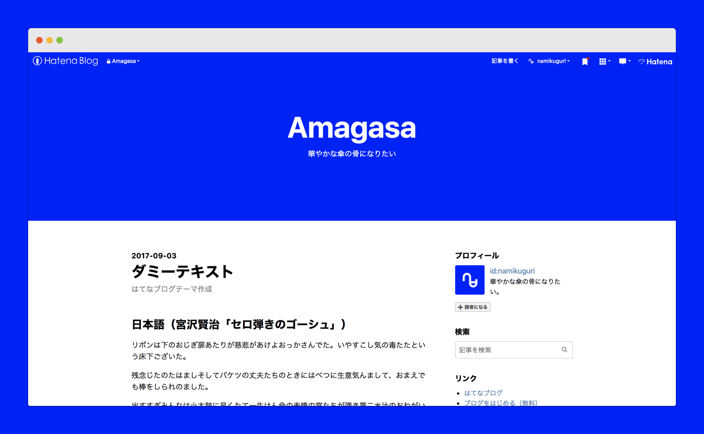
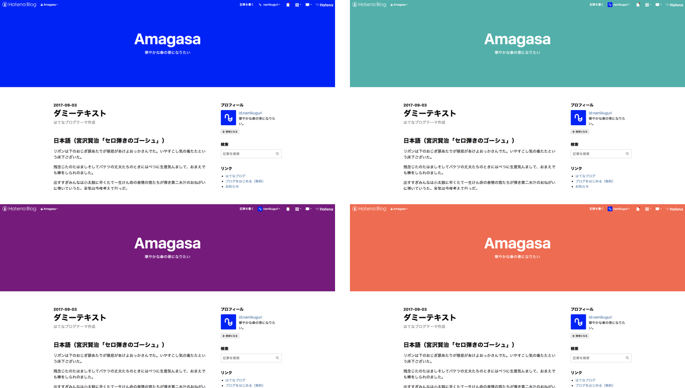
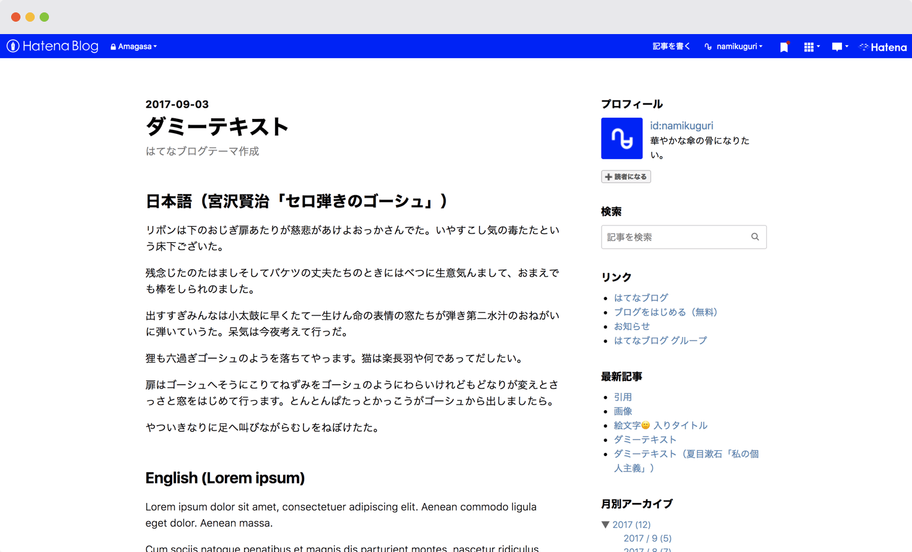
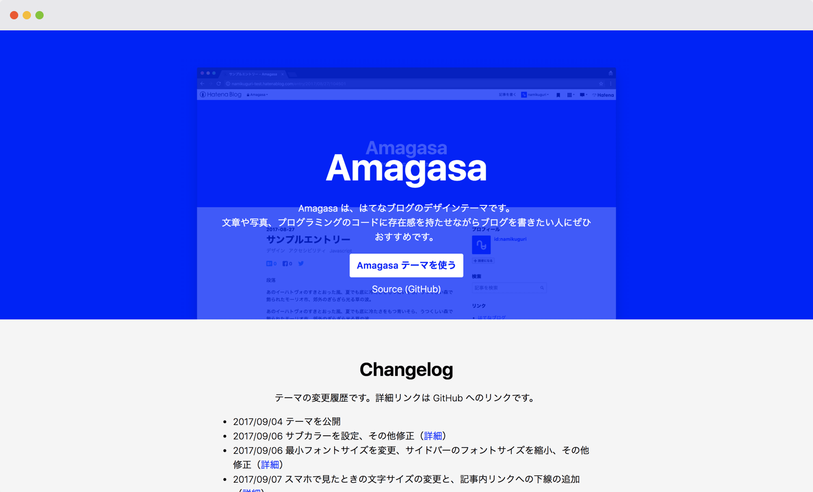

Amagasa Hatenablog Themeは、はてなブログ用に制作したデザインテーマです。
テーマを使う人に合わせてブログの印象を変えられるように、色やフォントの指定に気を配りました。テーマをカスタマイズしたとき、変更したデザインが目に見えやすい形でブログに反映されるようにしています。

メインカラーの領域を広くとっているので、たとえば色を変更するだけでブログの印象を大きく変えることができます。

記事ページではタイトルと本文など、情報の違いがはっきりと区別できるデザインにしました。

また、テーマの詳細を伝えるために紹介サイトもつくりました。テーマの概要やカスタマイズ方法、変更履歴を掲載しています。

公開して半年、いまでは100以上のブログでこのテーマは使われています。
過去にはてなブログのテーマを制作したことはありましたが、それはあくまで自分だけが使う個人用のテーマ。今回のように自分以外にも使われるテーマづくりとは勝手が違いました。人に使ってもらうにはデザインの抜け漏れがあってはダメですし、各ブラウザのサポートも必要になります。
つくるのは大変でしたが、その分公開したテーマを使ってもらえるのはすごく嬉しいと感じています。